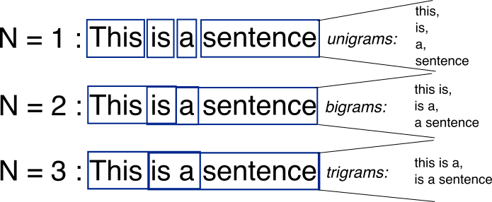
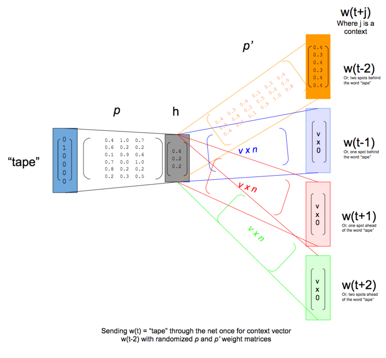
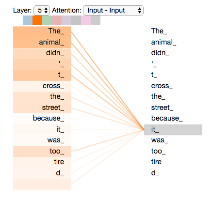

Start
Microcredencial Algoritmos verdes para la IA: diseño e implementación
Fundamentals of NLP
Tema: Natural language processing · Sesión 1 · Ponente: Olga Zamaraeva
How this session works
One page: explanations, interactive panels, code
- This page is the whole session. Open it on your laptop or phone, now or later:
olzama.github.io/teaching/GreenAI
- Interactive screens are animations you can step through, change and replay.
- Try it screens have Python that runs in your browser. Nothing to install.
- The longer notebooks run in Google Colab.
olga.zamaraeva@udc.es · UDC Teams · CITIC, 2nd floor
NLP and what it costs
Natural Language Processing & Computational Linguistics
- NLP: building systems that do things with language
- CL: using computation to study language
One engine now runs many tasks
Before: separate models, one per task
Now: one model, prompted
This is where “NLP” and “AI” blur.
Radford et al., “Language Models are Unsupervised Multitask Learners,” 2019; Brown et al., “Language Models are Few-Shot Learners,” NeurIPS 2020
Where the costs come from
A language model uses electricity, hardware and water for its whole life
- Building the hardware has a cost too, before any of this runs.
Training once, inference every time
(once)
model
- Over a model's life, the cost of all its requests can add up to more than the cost of training it.
- Generating text costs more than classifying it: the model runs once for every word it writes.
- One request runs on more than the processor that computes it: the host machine, idle spare machines, and the data center around them.
How do we measure it?
Computation, power and energy
An example: one hour on the GPU you will use in Colab
- FLOPs (floating-point operations): how much computation. They count the work, whatever the hardware.
- Power, in watts (W): how fast a device uses electricity, at a given moment.
- Energy, in watt-hours (Wh) or kilowatt-hours (kWh): power × time. This is what you pay for.
An NVIDIA T4 GPU
A real run draws less than the maximum, so 0.07 kWh is an upper bound for the GPU alone.
From energy to carbon and water
The same hour on the T4, with example values
- PUE (Power Usage Effectiveness): the data center's total energy ÷ the computers' energy. 1.0 would mean no overhead.
- Carbon intensity: grams of CO₂eq per kWh of electricity. It depends on where and when: the grid's mix of coal, gas, wind, sun.
- CO₂eq: all greenhouse gases, converted to the amount of CO₂ with the same effect.
- WUE (Water Usage Effectiveness): liters of water per kWh used by the computers.
- Operational carbon comes from running the hardware; embodied carbon, from building it.
Example values. Real ones depend on the data center and the grid.
Notebook 1 measures with CodeCarbon: it tracks the power of the processor, GPU and memory while your code runs, and multiplies the energy by your region's carbon intensity.
A real measurement: one prompt
The median Gemini text prompt, May 2025, as measured by Google
| What is counted | Wh |
|---|---|
| AI accelerators, while computing | 0.14 |
| host processor and memory | 0.06 |
| idle machines, kept ready | 0.02 |
| data center overhead (PUE 1.09) | 0.02 |
| total | 0.24 |
- What you count changes the number.
- Carbon: all the energy × the grid's carbon intensity, plus a share of building the hardware. Water: the computers' energy × WUE.
- Measured by the company that runs the model, for its own system. Not independently checked.
Source: Elsworth et al., “Measuring the environmental impact of delivering AI at Google Scale,” 2025 (arXiv:2508.15734)
What this course covers
The goal: to talk about modern LLMs, and what they cost
Three topics, one running project: the Green NLP Benchmark Lab
- To understand large language models, we need to understand language models in general, and how NLP got to them
Language models
Quantized language models
Retrieval-augmented generation
- Topic 2: the same model, with fewer bits for each of its numbers
- Topic 3: not a kind of model, but a way of using one: give it only the relevant pieces of the documents
- Every topic: the same tasks, measured the same way. One row per run in your own leaderboard.
Two tasks: question answering and translation
Question answering
- Answer questions about a small set of documents
- Easy to evaluate: an answer is right or wrong, so the score is the share of right answers
- The main task for measurement, in all three sessions
Machine translation
- Harder to evaluate: a sentence has many good translations
- Our example, Galician to English. Galician is a low-resource language: there is much less text for it than for Spanish or English.
Unha tía miña, que todo o solucionaba con ditos e refráns, dicía algo así como “un é escravo do que di e dono do que cala”
from the novel Speechwriter by Paulo Naseiro
From n-grams to transformers
Each step fixes a problem of the step before.
| Step | What it adds | What is still missing |
|---|---|---|
| 1 N-grams (statistical, 1990s) | predict the next word by counting | a word pair it never counted gets probability 0, even if a similar pair was counted |
| 2 Embeddings (neural, 2013) | a learned vector per word: similar words get similar vectors | vectors for words, not for sentences |
| 3 Encoder–decoder (2014) | read a sentence into one vector, write the translation from it | one vector for a whole sentence: early words fade |
| 4 Attention (2015) | the decoder looks back at every source word | the source is still read one word after another |
| 5 Self-attention (2017) | every word looks at every word of its own sentence, all at once | one round of looking |
| 6 Transformers (2017–today) | many blocks of self-attention, stacked: today's LLMs | cost grows with size and length |
Before statistics, NLP systems were written by hand, as rules. Each step since has replaced hand-written knowledge with more data and more computation.
Step 1 · N-grams
What is a language model?
- It predicts the next word.
- It gives a probability to every word in the vocabulary. The probabilities add up to 1.
- An n-gram model is the simplest kind: it counts word sequences in a corpus, then divides.

Credit: Jurafsky & Martin, Speech and Language ProcessingAfter “my”: one probability per word
Counted from three sentences, on the next screen. The vocabulary has 7 words.
Count, then divide
- This is a bigram model: the next word depends on the one word before it.
- Counting, then dividing: that is the whole model.
- A pair it never counted gets probability 0. Aunt and uncle appear in the same places, but the model keeps separate counts for each word: what it learns about aunt does not help with uncle.
- A Galician model has far fewer sentences to count from than a Spanish or English one, so more of its pairs are never counted.
Count, generate, score
Build the bigram model
Some lines have gaps marked ___. Replace each gap with code. Run shows what your code prints. Run the tests also checks it: each test checks one thing, including unusual inputs, and says what to fix. Under each exercise you can read the tests, the hints and the solution. Do the exercises in order: later ones use your earlier code.
Exercise 1 · Count bigrams, then divide
Complete build_bigram_counts and bigram_prob. counts[w1][w2] is how many times the pair w1 w2 occurs. unigram_counts[w1] is how many pairs start with w1. bigram_prob returns P(w2 | w1) = count(w1 w2) / count(w1). The cell should print 0.67 and 0.33.
Hints
- The inner loop looks at position
iand the word right after it,words[i + 1]. - The pair count is indexed by the first word, then the second word.
- The probability divides the pair count by the count of the first word.
Exercise 2 · Change the data, change the model
Add at least two sentences to EXTENDED_CORPUS so that, in the new model, P(uncle | my) is larger than P(aunt | my).
Hints
- The original corpus has “my aunt” twice and “my uncle” once.
- Each new sentence is a Python string, for example
"my uncle spoke kindly".
Generate text with the model
Exercise 3 · Generate text greedily
Given a start word, the model repeatedly picks the next word with the highest count. Complete the loop in generate: pick that word, and add it to the sentence.
Hints
candidatesmaps each possible next word to its count, for example{'aunt': 2, 'uncle': 1}.max(candidates, key=...)returns the key with the largest value ofkey(word).
generate("her", counts, unigram_counts) and run it. Why does the model stop at once? There is far less Galician text online than Spanish or English text. What would you predict about an n-gram model trained on Galician?Use the model to fix word order
A word-for-word translator turns Galician “unha tía miña” into “a aunt my”: the right words in the wrong order. A bigram model can score each possible order by how fluent it sounds, and keep the best one.
Exercise 4 · Score word orders with a smoothed bigram model
Two gaps. In sentence_log_prob, compute the add-one smoothed probability of each pair and add its logarithm to log_prob. In the search loop, keep the best-scoring order seen so far.
Hints
- Add-one smoothing adds 1 to every pair count, and adds the vocabulary size to the denominator.
- Logs turn the product of probabilities into a sum:
log_prob += math.log(prob). - Update the best order only when the new score is higher than
best_score.
Exercise 5 · Count the orderings
There are two ways to get the number of orderings of the 8 words in BIGGER_WORDS, and they must give the same number:
- Count them. The loop goes through every ordering, one at a time. Fill in the list to order, and add 1 to
countfor each ordering. - Compute them. Set
expectedwith the formula for the number of orderings of n different words.
The last lines print both numbers, one under the other, and say whether they match.
Hints
- n different words have n! orderings: n × (n − 1) × … × 1.
mathwas imported in Exercise 4.
Shakespeare, one word at a time
N-grams at scale
Notebook 01b, in Colab (CPU only, no GPU needed)
- The same counting, on 2 million words each of Galician and Spanish Wikipedia
- How many bigrams of new text has the model never seen, as the training text grows?
- What does a longer n do? And a Galician trigram model writes text
Step 2 · Embeddings
Comparing vectors: cosine similarity
How similar are the directions of two vectors? The formula, derived on the board.
Shakespeare, counted by play
From words to vectors: embeddings
Why vectors of counts are not enough: they are long, mostly 0, and similar words do not line up
How embeddings are actually learned
Skip-gram (Mikolov et al., 2013): predict the neighbors
A tiny corpus
Window = 1
16 training pairs: input → word to predict
| cats → chase | cats → eat |
| chase → cats | eat → cats |
| chase → mice | eat → fish |
| mice → chase | fish → eat |
| dogs → chase | dogs → eat |
| chase → dogs | eat → dogs |
| chase → balls | eat → meat |
| balls → chase | meat → eat |
- The task: given cats, give high probability to chase and eat
- The task never mentions word vectors. The vectors appear because the model needs them to make predictions.
Skip-gram: two pictures of the same model
The classic picture (Mikolov et al., 2013)
The same model, with numbers

Illustration: district-data-labs (Medium)- Input w(t) = “tape”, as a one-hot vector. Projection = its row of p, called h: the word's embedding.
- Output = h × p′: one score per word, with the same p′ for every position. The picture stops at the scores; softmax, on the next screens, turns them into probabilities.
Step by step, 1: from a word to its vector
Our corpus, with the tables at the start of training
Step by step, 2: from the vector to probabilities
The model's guess for the neighbor of cats, before any training
Skip-gram, step by step
Similar company, similar vectors
The company each word keeps
| cats | chase, eat |
| dogs | chase, eat |
| mice | chase |
| balls | chase |
| fish | eat |
| meat | eat |
The table after training
| cats | 0.63 | 0.37 |
| dogs | 0.86 | 0.48 |
| mice | 3.89 | −3.15 |
| balls | 3.93 | −2.94 |
| fish | −0.34 | 5.00 |
| meat | −0.16 | 4.91 |
- Same neighbors → same nudges, pair after pair → same direction
- cos(cats, dogs) = 1.00 cos(cats, fish) = 0.44
- Task solved: P(chase | cats) 0.11 → 0.47, P(eat | cats) 0.12 → 0.52
“You shall know a word by the company it keeps.” J. R. Firth (1957)
Which words are similar?
What we keep: the embedding table
- After training, discard the prediction part and keep the table. Its rows are the word embeddings.
- Embeddings = the parameters the model uses to solve its prediction task
- Rare word → few pairs → few nudges → poorly placed vector
- Less Galician text online → weaker embeddings for many Galician words
Embeddings playground
Notebook 01c, in Colab (CPU only, no GPU needed)
- Part A: train skip-gram on 2 million words of Galician, with 2 to 300 dimensions: time, energy, quality
- Part B: train on less text: which words suffer first?
- Part C: does a multilingual model match Galician words with their Spanish and English translations?
Step 3 · Encoder–decoder translation
Machine translation: a very short history
1950s
1990s
attention, 2015
2020s
- One of AI's oldest goals: first public demo in 1954 (Georgetown–IBM)
- Each shift trades hand-written knowledge for more data and more compute
Source: Hutchins, “Machine Translation: A Concise History,” 2007
Neural translation: an encoder and a decoder
The first neural translation models: Sutskever, Vinyals & Le, NeurIPS 2014 (arXiv:1409.3215)
Loss and gradient
Training, development and test data
The chain rule
Backpropagation
Neural translation, step by step
Why a real model still writes “an aunt of mine”
Step 4 · Attention
Attention was born in machine translation
- The bottleneck: the whole sentence squeezed into one vector
- Bahdanau, Cho & Bengio (2015): for every word it writes, the decoder looks back at every source word and computes how much to use each one: the attention weights (scores, then softmax, as for p)
- Computed anew for every word written, through learned tables that backpropagation trains (diagram, right; next screen: query, key and value)
- Which source word goes with which word written (alignment) comes out of the attention weights, with no hand-written rule
- Invented for translation, years before today's LLMs
Attention weights: Bahdanau, Cho & Bengio, ICLR 2015 (arXiv:1409.0473), Figure 3(a), read from the paper and redrawn
Query, key and value
- Query q, computed from the decoder's state: what the decoder looks for, before the word it is about to write
- Key k: what each source word offers to be found by
- Score = q · k, the dot product; softmax turns the scores into attention weights that add up to 1
- Value v: what each source word contributes; the mix is the sum of the values, each times its attention weight
- On the attention page (next screen), the keys and the values are the same vectors: the encoder's, after each word
Like a search in a library. You come with a question: the query. Every book has a label on its spine: its key. You compare your question with each label, and the better the match, the more of that book you read: the attention weight. What you take away is a blend of the books' contents, the values, mostly from the best matches. The decoder does this before every word it writes, each time with a new question.
Attention, computed by hand
The query's numbers, and two trained models
A large attention weight does not mean an important word
Unha tía miña, que todo o solucionaba con ditos e refráns, dicía algo así como “un é escravo do que di e dono do que cala”.
- The small model with attention from the previous screen (section 4) has written “an aunt of mine, who solved everything”. Next: “with”.
- Largest attention weight before “with”: the full stop, not con (“with”)
- Test: replace the mix the model reads (table, right). It still writes “with”: the full stop does not matter here.
- Why: in all 5,000 training sentences, “everything” is followed by “with”. The English already written decides the next word.
- An attention weight shows where the model looked, not what it needed.
The attention weights before “with”: the four largest of 31, one per Galician word or mark
| . (the full stop) | 0.54 |
| solucionaba (solved) | 0.12 |
| con (with) | 0.10 |
| algo (something) | 0.08 |
The test: what the model reads → probability of “with”
| its own mix | 0.999 |
| nothing (all zeros) | 0.997 |
| only the full stop | 0.998 |
| only con | 0.998 |
From a row of attention weights to a real model's grids
Step 5 · Self-attention
Self-attention: every word looks at every word of its own sentence
- Vaswani et al. (2017): the same mechanism within one sentence: every word looks at every word, itself included, all at once
- “it” → “the animal”, with no hand-written rule
- No decoder here: every word's vector gives its own query, key and value, each through its own learned table (attention page, section 6, “one head”)

Layer 5; coloured squares: its 8 heads (orange: the one drawn); right: “it”, left: where it looks, darker = more; “tire·d”: one word, two tokens. Illustration: jalammar.github.io/illustrated-transformer · Source: Vaswani et al., NeurIPS 2017 (arXiv:1706.03762)Several heads at once: multi-head attention
- Several heads side by side, each with its own grid of attention weights and its own mix; one learned table combines the mixes into one new vector per word (the real model: 8 heads)
Self-attention heads
Why attention cost grows with the length of the input
- One square = one score (query · key). Double the words → four times the scores: the growth is quadratic
- “unha tía miña” was three words; a whole document is thousands
Step 6 · Transformers
A transformer
- Orange: information moves between tokens. Green: each token on its own
Sequential and parallel computation
The problem both layers solve: the output for a token must hold information from the other tokens
- Recurrent: the output for one token is an input for the next, as in the encoder of Step 3: this is how earlier tokens reach later ones
- Transformer: no waiting, but the comparisons grow with the square of the length (Step 5), the recurrent steps only with the length. The comparisons are independent, so a GPU runs them side by side; the time grows once they exceed what it can run at once
GPUs and matrix multiplication
- The query table: a matrix of parameters set by training, the same for every token. It turns each token's vector into its query (attention page, section 6); in papers, a weight matrix
- Small number in a cell: the core that computes it. Cores are many and simple, and all do the same operation on different numbers (the T4 of your notebooks has 2,560)
- Our sentence, 35 tokens of 512 dimensions: one token's row is 512 sums, all the rows 17,920
Three shapes, three training tasks
| trained to | translate |
|---|---|
| trained on | pairs of translated sentences |
the original shape of 2017
| trained to | fill in hidden words |
|---|---|
| trained on | raw text |
section 8 of the attention page; reads text, does not write it; BERTScore in notebook 01e
| trained to | write the next word |
|---|---|
| trained on | raw text |
GPT-3: 96 blocks; Qwen2.5-1.5B, the model of your notebook: 28 blocks
- Raw text needs no one to prepare a gold output: the hidden word and the next word are already in the text. That is why these two models can train on so much more text
What a decoder may look at
Encoder (BERT): every token looks at every token
Decoder (GPT): only at itself and the tokens before it
- Rows look, columns are looked at, as in the grids you read. ×: the weight is forced to 0
- The decoder's job is to write the next word: if it could see that word, there would be nothing to learn
From two stacks to one
- The only thing removed is the separate encoder stack; its work moves into the single stack
- Translation has an input and an output, but both are text: they can be one sequence, and the same layers can build the vectors of both
Training on raw text
- The task of Step 1, the next word, now with all the text before it. Every position of every text gives a gold output, with nobody writing one
- Why this teaches so much: predicting well takes grammar, meaning and facts, and translation too, because text contains it: PaLM's training data held over 30 million translation pairs
Numbers: GPT-2 (124 million parameters), trained only on this task. Source: Briakou et al., “Searching for Needles in a Haystack,” ACL 2023 (arXiv:2305.10266)
How a decoder-only model translates
One sequence: the input, then what the model writes
English:
- The real grid of Qwen2.5-1.5B, the model of your notebook: layer 19, head 10. Each row writes the next token: row “:” writes “a”
- Orange block: the rows writing the English, looking at the Galician. They put 0.88 of their weight there; the median head, 0.12. This block does the job of section 6's grid
- It looks at t·ía and writes “sister”: the weights show where it looks, not whether it is right
This head was found by searching all 336 heads on this one prompt.
Attention playground
Notebook 01d, in Colab (CPU only, no GPU needed)
- Part A: for each of the 48 heads of the real model's encoder (its self-attention), measure how much it looks at the previous, the same or the next token, on a sentence you choose
- Part B: count the attention scores, then time the whole encoder as the text gets longer. Does the time grow like n²?
Generating text: why inference is sequential
(cache: 1 word)
(cache: 2 words)
(cache: 3 words)
one box = the key and value of one written word, kept in the cache; darker = added later
- One word at a time. Each word written gets its own key and value (the decoder's self-attention looks at the words written so far); the KV cache keeps them, so it grows with every word
- Translating the rest of our story this way: the cache keeps growing the whole time
Why does model size cost so much?
What doubling each one does to the computation of one use
| double… | and the computation |
|---|---|
| the parameters (wider vectors, more blocks) | doubles for every word read or written |
| the input (the text read) | doubles in the feed-forward parts; quadruples in attention: every word compared with every word |
| the output (the text written) | doubles the steps, one word at a time, each with a bigger cache |
- Model size and the length of the text read and written are levers with a real, computable energy cost
From transformers to today's LLMs
Today's LLMs are still transformers: what changed?
Parameters, drawn to size (area)
- The architecture stays: open models such as Qwen2.5 and Mixtral are decoder-only transformers (closed models do not publish theirs)
- Scale: the squares on the left
- Training stages: more training after writing the next word
- Refinements: for example, using only part of the model for each token
From writing the next word to following instructions
on raw text
answers written by people
people rank answers
- Stage 1 gives a model that continues text; stages 2 and 3 train that same model further
- In Ouyang et al., people preferred the answers of a 1.3-billion-parameter model with these stages to those of the 175-billion-parameter GPT-3 without them: more training stages, 100 times fewer parameters
Source: Ouyang et al., “Training language models to follow instructions with human feedback,” NeurIPS 2022 (arXiv:2203.02155)
Cost levers in today's models
| lever | what today's models do | effect on the computation |
|---|---|---|
| the parameters | Mixture of experts: several feed-forward blocks per layer, each token uses only some. Mixtral: 8 per layer, 2 used per token | down: 13 billion parameters used per token, of 47 billion |
| the input | Long context: whole documents read at once | up: attention grows with the square of the length |
| the output | Reasoning models: hundreds to thousands of tokens written before the answer (DeepSeek-R1) | up: more steps, a bigger cache |
- Sessions 2 and 3 cut costs on these models: fewer bits for each number, less text to read
Sources: Jiang et al., “Mixtral of Experts,” 2024 (arXiv:2401.04088); DeepSeek-AI, “DeepSeek-R1,” 2025 (arXiv:2501.12948)
Back to translation
What did LLMs bring to machine translation?
Dedicated MT: one model per language pair
One LLM: any pair, steered by an instruction
- One model, 100+ languages; controllable by instruction
- But: usually far more expensive per translation than a dedicated MT model
How well do LLMs actually serve Galician?
- On a Galician text-completion test, the 1.3B model beat all the models it was compared with, including a Portuguese model five times its size
Source: Gamallo et al., “A Galician-Portuguese Generative Model,” EPIA 2024; Proxecto Nós (USC)
Your turn
The task: answering questions about documents
+ question
model
- Input: a few short documents about green AI, and a question. The model must answer from the documents, in one short sentence.
- Model: Qwen2.5-1.5B-Instruct, a small general-purpose language model
- Score: an answer is right if it contains the reference answer as whole words, ignoring capital letters. Accuracy = right answers ÷ all questions.
- Two runs: with the documents, and without them. What do the documents add to accuracy, and to energy?
| question | What does the acronym PUE stand for? |
|---|---|
| reference | power usage effectiveness |
The check is simple and cheap. It also misses right answers that use other words.
Notebook 01a: Baseline measurement
- Answer questions about a small set of documents, measured with CodeCarbon: energy, CO₂eq and quality, as rows of your leaderboard
- The same quiz with no documents: what does the model know on its own?
Notebook 01a, in Colab, with a GPU
- In Colab: Runtime → Change runtime type → T4 GPU
- Download leaderboard.csv at the end: Sessions 2 and 3 add rows to it
Notebook 01e: Translation and its evaluation
- Part 1: a passage with today's sentence, through rule-based, statistical, neural and LLM translation, each one measured
- Part 2: BLEU, BERTScore and an LLM-as-judge grade the translations, and we measure what grading itself costs
Notebook 01e, in Colab, with a GPU
- In Colab: Runtime → Change runtime type → T4 GPU
- Download mt_leaderboard.csv and mt_eval_leaderboard.csv at the end
What comes next
Next sessions: the same tasks, two changes
baseline
quantized
retrieval (RAG)
- Session 2: the same model, with fewer bits for each number. Less memory, often less energy. Does the quality hold?
- Session 3: retrieve the relevant passages of the documents first, and give the model only those. Less text to process for every question.
- Both are measured against today's baseline, with the same method.

Refresher
Quick refresher: multiplying matrices
- To multiply A (m × n) by B (n × p): the inner dimensions must match; the result is m × p
- Each entry of the result is a dot product: multiply matching entries, add them up